RPG
Random Pixel / Picture Generator. Every clip below is a seamless 4-second loop rendered by the Mac app and saved straight from its GIF export. Make your own in the browser , on a Chromebook or any computer.
Nature 160 × 90 PIXELS · 12 FPS
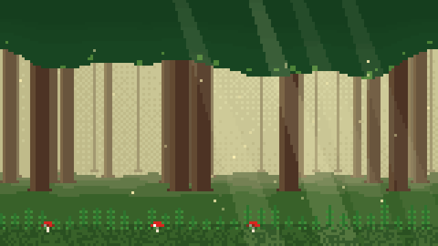
Forest light shafts · floating motes 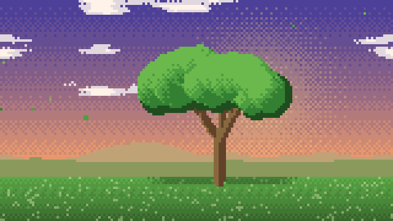
Big Tree swaying branches 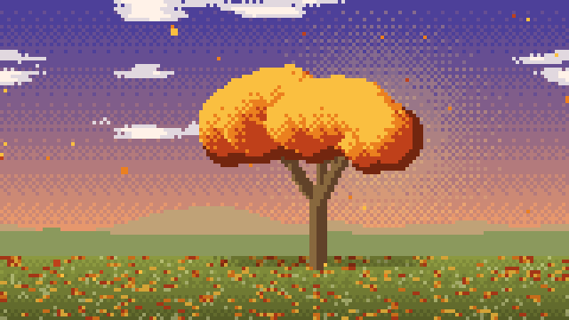
Autumn Tree falling leaves 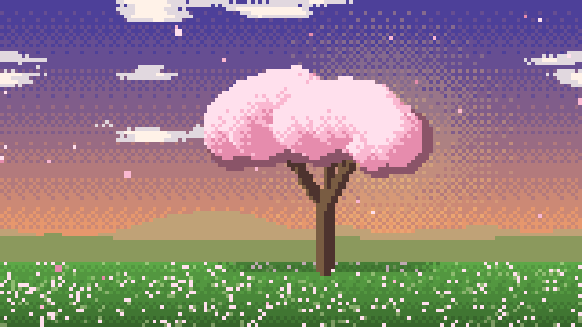
Cherry Blossom drifting petals 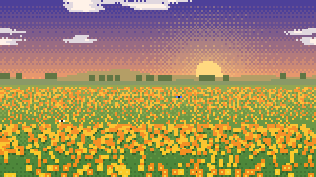
Flower Field wind waves · butterflies 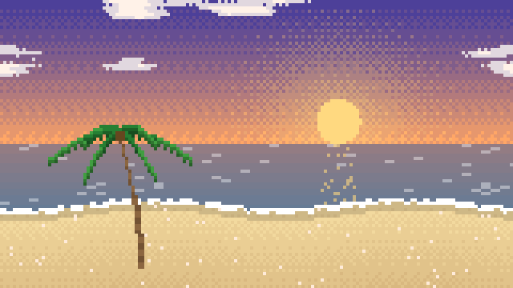
Tropical Beach waves · palm trees 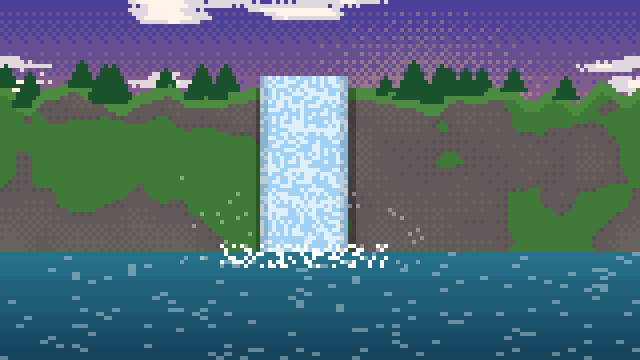
Waterfall falling water · mist
2D landscapes 160 × 90 PIXELS · 12 FPS
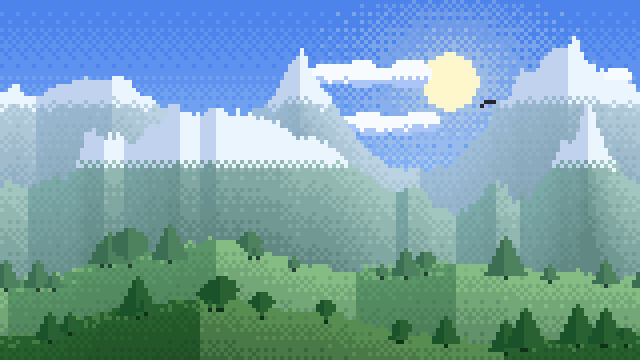
Meadow parallax hills · lake reflection 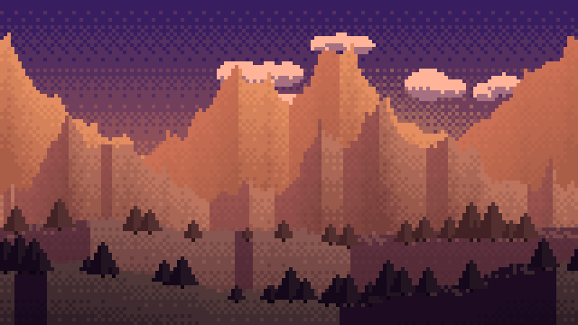
Sunset low sun · drifting clouds 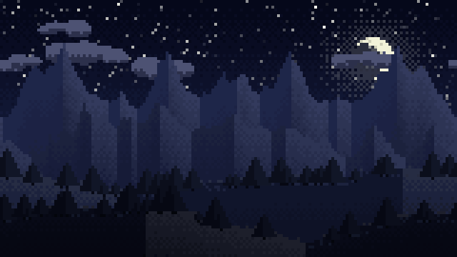
Night twinkling stars · fireflies 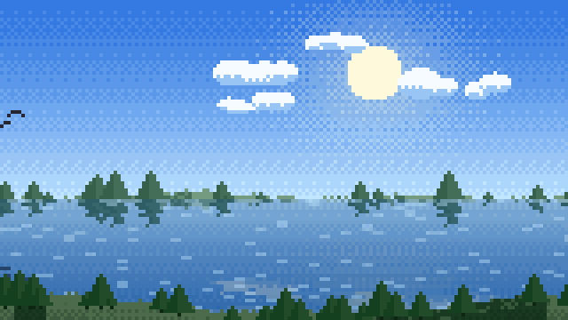
Ocean rippling water · birds 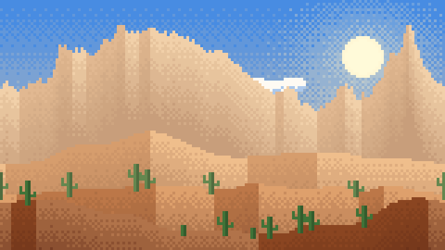
Desert mesas · cacti · blowing dust 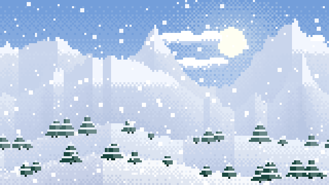
Winter snowfall · snowy pines 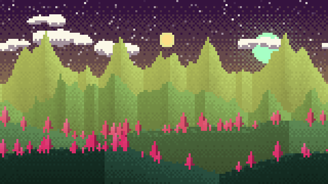
Alien World two moons · glowing crystals 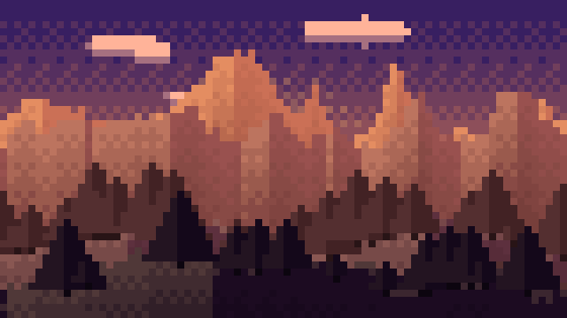
Sunset, big pixels 80 × 45 pixels
3D scenes 160 × 90 PIXELS · 12 FPS
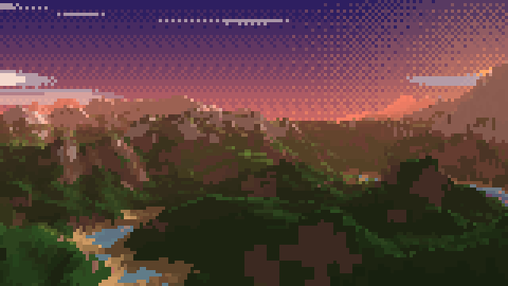
Flyover endless terrain · aerial fog 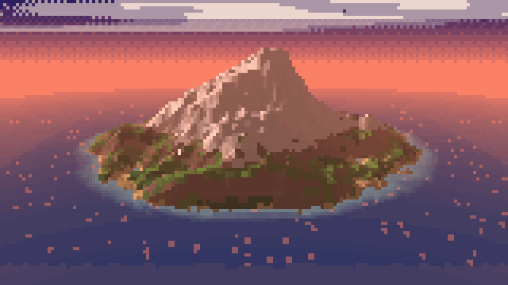
Orbit 360° around an island 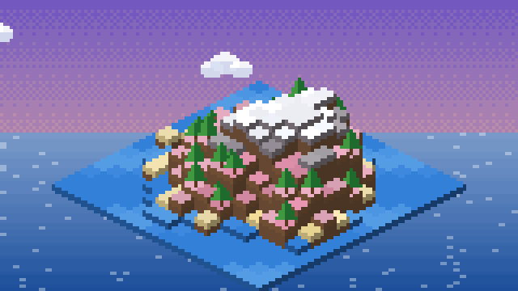
Isometric voxel diorama · animated water
Each Copy button copies that GIF. Most browsers only allow copying still pictures, so if yours refuses the animated GIF you get its first frame instead. For animated copies, use the Copy button on the GIF shelf in the RPG app. Made with RPG for macOS.